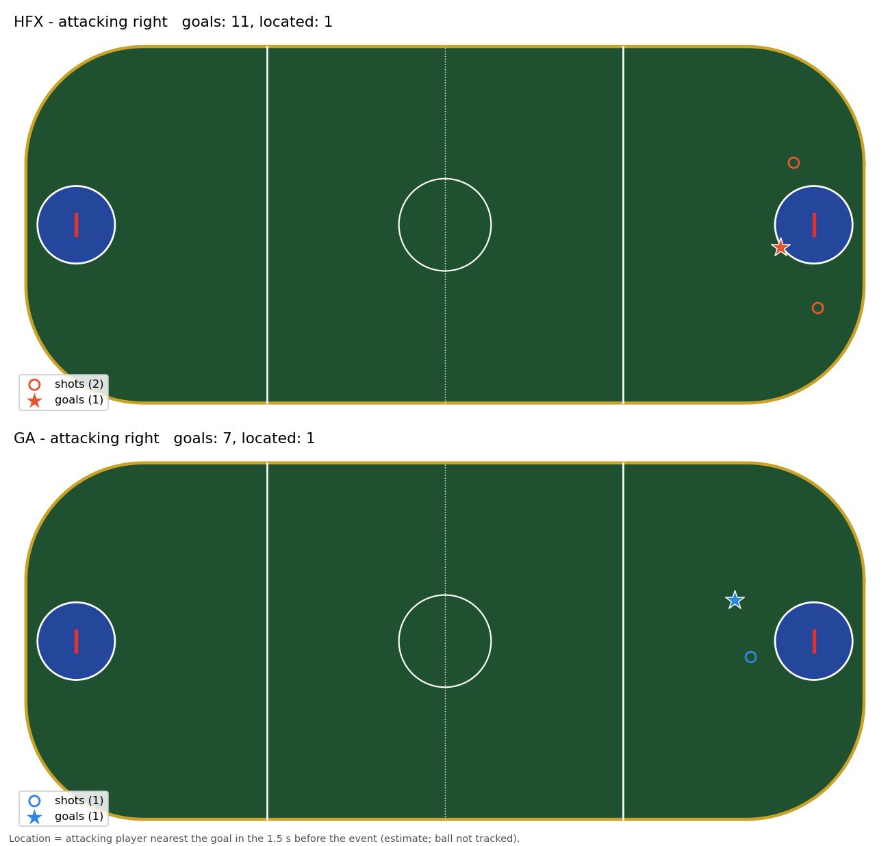
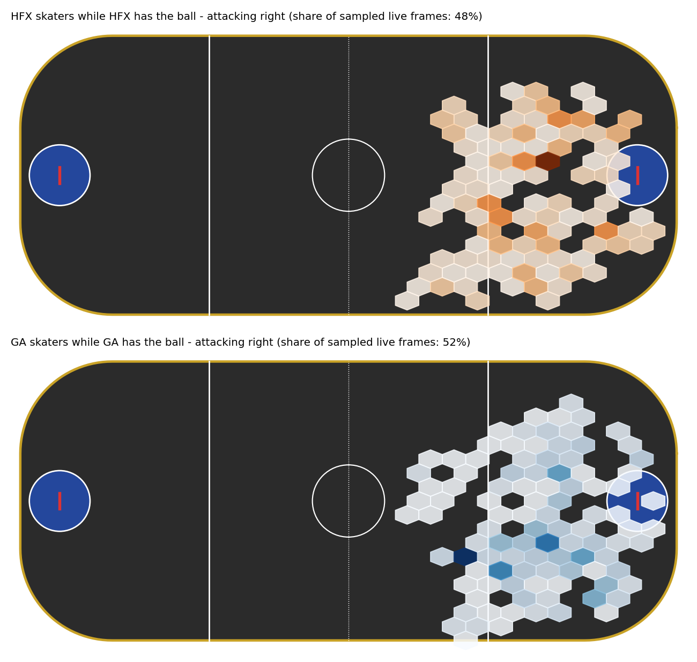
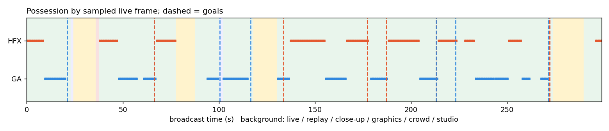

| segment | shots | minutes |
|---|---|---|
| closeup | 2 | 0.1 |
| crowd | 1 | 0.0 |
| live | 23 | 4.1 |
| replay | 7 | 0.8 |



| t | broadcast_time | period | clock | shot_clock | away_score | home_score | event | team | x_ft | y_ft | attack_end | confidence | audio_confirmed | note |
|---|---|---|---|---|---|---|---|---|---|---|---|---|---|---|
| 1.8 | 0:01.7 | 1.0 | 14:35 | 10.0 | 0.0 | 0.0 | shot | HFX | -89.0 | 19.8 | -1.0 | medium | shot clock reset; shot with offensive rebound | |
| 21.0 | 0:21.0 | 1.0 | 13:42 | 30.0 | 0.0 | 1.0 | goal | GA | medium | False | ||||
| 42.8 | 0:42.7 | 1.0 | 13:17 | 9.0 | 0.0 | 1.0 | shot | HFX | -83.2 | -14.8 | -1.0 | medium | shot clock reset; shot with offensive rebound | |
| 53.8 | 0:53.7 | 1.0 | 12:20 | 10.0 | 0.0 | 1.0 | shot | GA | medium | shot clock reset; shot with offensive rebound | ||||
| 66.4 | 1:06.4 | 1.0 | 11:46 | 30.0 | 0.0 | 2.0 | goal | GA | medium | False | ||||
| 66.4 | 1:06.4 | 1.0 | 11:46 | 30.0 | 1.0 | 1.0 | goal | HFX | medium | False | ||||
| 100.5 | 1:40.5 | 2.0 | 14:44 | 21.0 | 1.0 | 3.0 | goal | GA | medium | False | ||||
| 116.5 | 1:56.5 | 2.0 | 14:11 | 30.0 | 1.0 | 4.0 | goal | GA | -69.1 | -9.8 | -1.0 | medium | False | |
| 133.6 | 2:13.5 | 2.0 | 13:16 | 11.0 | 2.0 | 3.0 | goal | HFX | -80.0 | 5.4 | -1.0 | high | True | |
| 155.2 | 2:35.2 | 2.0 | 11:01 | 19.0 | 2.0 | 4.0 | possession_change | GA | medium | from HFX (player positions) | ||||
| 162.2 | 2:42.2 | 2.0 | 10:54 | 12.0 | 2.0 | 4.0 | shot | GA | medium | shot clock reset; shot with offensive rebound | ||||
| 169.8 | 2:49.7 | 2.0 | 10:31 | 8.0 | 2.0 | 4.0 | shot | HFX | medium | shot clock reset; shot with offensive rebound | ||||
| 177.2 | 2:57.1 | 2.0 | 10:23 | 25.0 | 3.0 | 4.0 | goal | HFX | medium | False | earlier goal not shown on air | |||
| 177.2 | 2:57.1 | 2.0 | 10:23 | 25.0 | 4.0 | 4.0 | goal | HFX | medium | False | ||||
| 187.0 | 3:07.0 | 2.0 | 2:25 | 30.0 | 5.0 | 4.0 | goal | HFX | medium | False | earlier goal not shown on air | |||
| 187.0 | 3:07.0 | 2.0 | 2:25 | 30.0 | 6.0 | 4.0 | goal | HFX | medium | False | ||||
| 204.2 | 3:24.2 | 3.0 | 14:07 | 22.0 | 6.0 | 4.0 | possession_change | GA | medium | from HFX (player positions) | ||||
| 213.0 | 3:33.0 | 3.0 | 13:59 | 14.0 | 7.0 | 4.0 | goal | HFX | medium | False | earlier goal not shown on air | |||
| 213.0 | 3:33.0 | 3.0 | 13:59 | 14.0 | 8.0 | 4.0 | goal | HFX | medium | False | earlier goal not shown on air | |||
| 213.0 | 3:33.0 | 3.0 | 13:59 | 14.0 | 9.0 | 4.0 | goal | HFX | medium | False | ||||
| 213.0 | 3:33.0 | 3.0 | 13:59 | 14.0 | 6.0 | 5.0 | goal | GA | medium | False | ||||
| 223.1 | 3:43.0 | 3.0 | 1:04 | 30.0 | 9.0 | 6.0 | goal | GA | medium | False | ||||
| 238.8 | 3:58.7 | 4.0 | 14:11 | 2.0 | 9.0 | 6.0 | shot | GA | medium | shot clock reset; shot with offensive rebound | ||||
| 246.2 | 4:06.2 | 4.0 | 12:50 | 10.0 | 9.0 | 6.0 | shot | GA | -73.0 | 3.8 | -1.0 | medium | shot clock reset; shot with offensive rebound | |
| 252.2 | 4:12.2 | 4.0 | 11:13 | 17.0 | 9.0 | 6.0 | shot | HFX | medium | shot clock reset; shot with offensive rebound | ||||
| 257.5 | 4:17.4 | 4.0 | 11:08 | 26.0 | 9.0 | 6.0 | possession_change | GA | medium | from HFX (player positions) | ||||
| 259.2 | 4:19.2 | 4.0 | 11:06 | 24.0 | 9.0 | 6.0 | shot | GA | medium | shot clock reset; shot with offensive rebound | ||||
| 271.5 | 4:31.5 | 4.0 | 9:22 | 22.0 | 9.0 | 7.0 | goal | GA | medium | False | ||||
| 272.0 | 4:32.0 | 4.0 | 9:22 | 22.0 | 11.0 | 6.0 | goal | HFX | medium | False | ||||
| 272.0 | 4:32.0 | 4.0 | 9:22 | 22.0 | 10.0 | 6.0 | goal | HFX | medium | False | earlier goal not shown on air | |||
| 297.8 | 4:57.7 | 4.0 | 5:11 | 23.0 | 11.0 | 7.0 | shot | HFX | medium | shot clock reset; shot with offensive rebound |